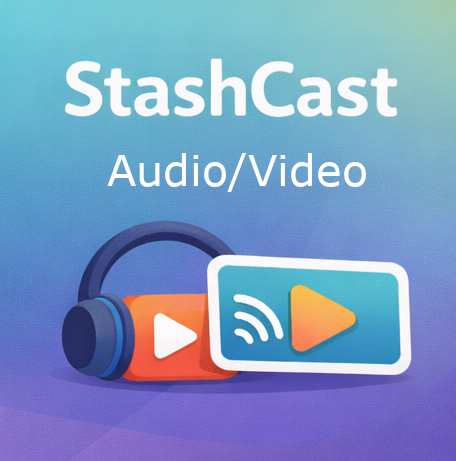

stashcast — any URL → your podcast feed.
A small, single-user Django app. Give it a link; it runs yt-dlp + ffmpeg in a background worker and publishes the result as audio/video RSS feeds for your podcast app.
license GPLv3python 3.12+db sqlitequeue hueystorage disk | s3i18n en es pt
/admin/tools/grid/
~/stashcast copy
$ docker compose up -d && docker compose run web just setup ✔ Container stashcast-web Started ✔ Container stashcast-worker Started $ curl "localhost:8000/stash/?token=$TOKEN&type=auto&url=https://youtu.be/…" $ docker compose logs -f worker [huey] fetching metadata "How Compilers Actually Work" [yt-dlp] downloading 248.4 MiB [ffmpeg] thumbnail → webp, subs → vtt [stash] summary (lexrank, 3 sentences) [feed] published → /feeds/video.xml
Pipeline
bookmarklet→/stash/ API→huey worker→yt-dlp · ffmpeg→RSS
Feeds
 /feeds/audio.xmlaudio
/feeds/audio.xmlaudio /feeds/video.xmlvideo
/feeds/video.xmlvideo
/feeds/combined.xmlbothSpec sheet
| sources | anything yt-dlp supports, direct media, HTML w/ embeds, playlists |
| interfaces | web UI, admin, bookmarklet, HTTP API, manage.py CLI |
| processing | optional ffmpeg transcode, subtitles, extractive summaries |
| storage | local disk, or S3-compatible (S3, R2, MinIO) |
| auth | single user; optional token-protected feeds |
| i18n | en, es, pt |
Is this the right tool?
| you want to… | use |
|---|---|
| listen later to one-off links | stashcast ✓ |
| auto-follow channels / playlists | TubeSync, Podsync |
| archive media long-term | ArchiveBox, Tube Archivist |
| save articles to read later | Savr (sister project) |
On mobile
screenshots: generated by Playwright from fixture data · covers are generated, not third-party art